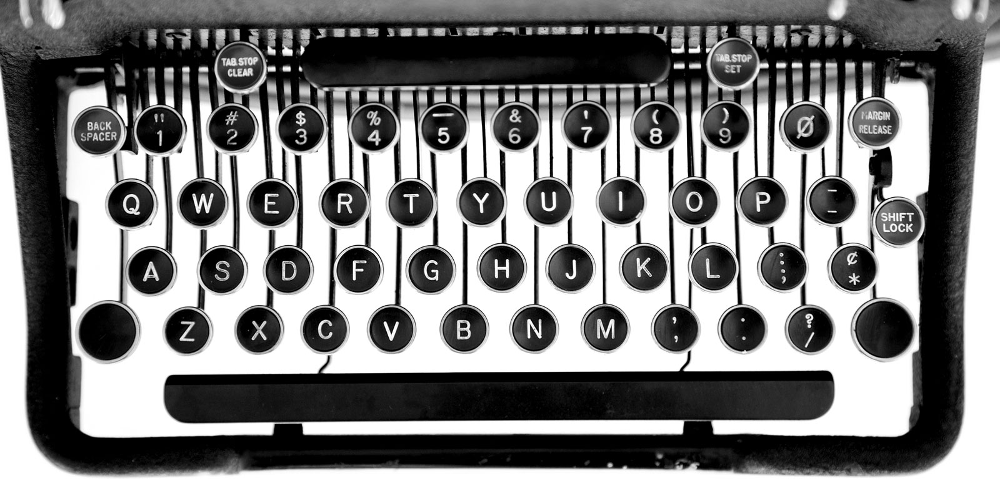
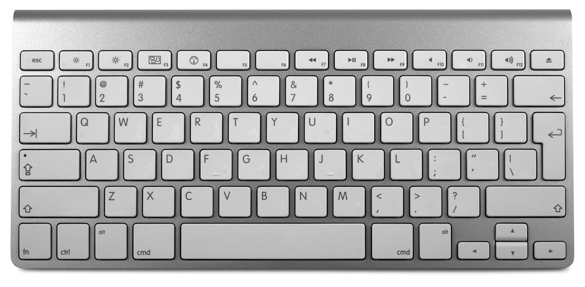

Good typography starts with good typing. This chapter is a tour of the nonalphabetic characters on the computer keyboard—some obscure, some underappreciated, and some well-known but misused.
A text is a sequence of characters. Every character is a tool. Your goal: to always use the right tool for the job.
Today’s computer keyboards depict the available characters in almost the same way as a manual typewriter. But this depiction is misleading. The computer keyboard can produce many more characters than the ones visible on its keys. These include accented characters, math symbols, and white-space characters—invisible markers that are useful for getting consistent typographic results.
Beware. This chapter is more difficult than it might seem. Typing is second nature for most of us. Habits are ingrained. After years of doing things one way, it can be hard to learn a different way.
But it’s worth it. By typing the right characters while writing and editing, you’ll save time and effort later on when you’re formatting and laying out your document.
- straight and curly quotes
- one space between sentences
- question marks and exclamation points
- semicolons and colons
- paragraph and section marks
- parentheses, brackets, and braces
- hyphens and dashes
- trademark & copyright symbols
- ampersands
- ellipses
- signature lines
- apostrophes
- accented characters
- foot and inch marks
- white-space characters
- word spaces
- nonbreaking spaces
- tabs and tab stops
- hard line breaks
- carriage returns
- hard page breaks
- optional hyphens
- math symbols
- ligatures